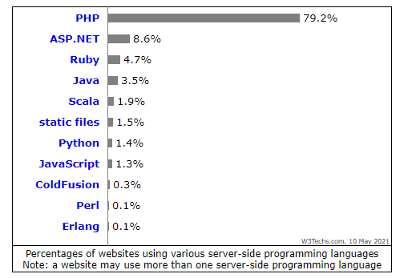
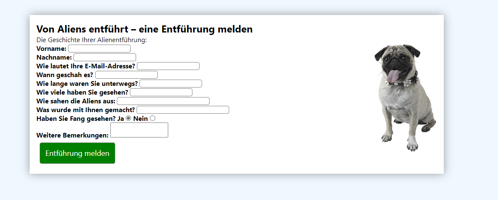
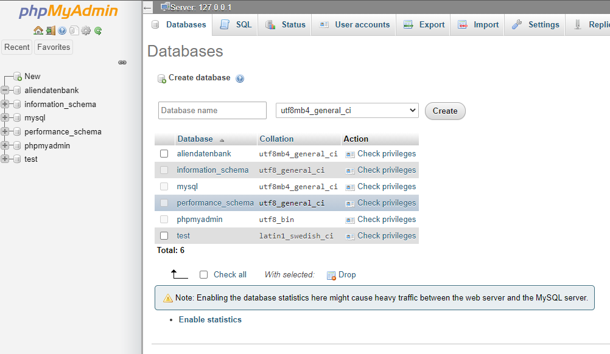
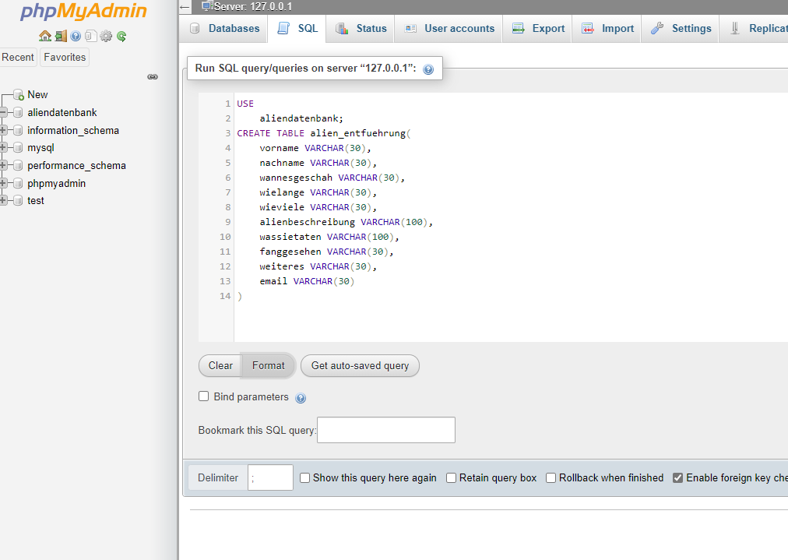
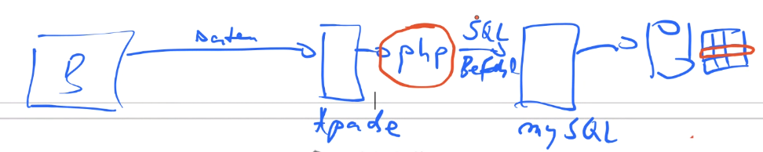
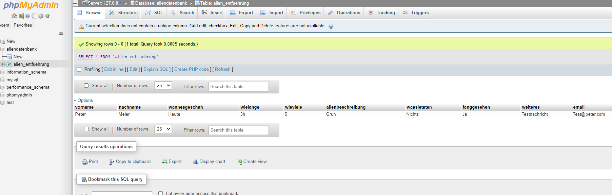

Vorlesung 6 - PHP
 10.05.2021
10.05.2021
PHP
In der heutigen Vorlesung haben wir uns mit PHP auseinandersetzt. Dazu haben wir zuerst eine Statistik aus dem Jahre 2011 und eine aktuelle zum Thema "Verwendete Serverseitige Programmiersprachen" angeschaut. Hier beispielsweise die aktuellste Statistik aus dem aktuellen Monat (Mai 2021).
Man erkennt ganz klar, dass PHP diese Statistik anführt. Gefolgt von ASP.NET (Microsofts Web Technologie) und Ruby.
Wir haben uns nun anhand einer Beispielaufgabe angesehen, wie PHP arbeitet.
Von Aliens entführt
Dazu haben wir eine vorgefertigte Seite mit einem Formular erhalten. Dort kann man Sichtungen von Aliens melden. Realisiert wird das mit einem HTML Formular. Meine Version weicht noch etwas davon ab, da ich ein Wenig mit dem CSS gespielt habe.

<!DOCTYPE html>
<html lang="de">
<head>
<meta http-equiv="Content-Type" content="text/html; charset=utf-8" />
<title>Von Aliens entführt - eine Entführung melden</title>
<link rel="stylesheet" type="text/css" href="style.css" />
</head>
<body>
<div id="center">
<h2>Von Aliens entführt – eine Entführung melden</h2>
<p>Die Geschichte Ihrer Alienentführung:</p>
<img src="fang.jpg" alt="Mein entführter Hund Fang." />
<form method="post" action="../meldung.php">
<label>
Vorname:
<input type="text" id="vorname" name="vorname" />
</label>
<label>
Nachname:
<input type="text" id="nachname" name="nachname" />
</label>
<label>
Wie lautet Ihre E-Mail-Adresse?
<input type="text" id="email" name="email" />
</label>
<label>
Wann geschah es?
<input type="text" id="wanngeschahes" name="wanngeschahes" />
</label>
<label>
Wie lange waren Sie unterwegs?
<input type="text" id="wielange" name="wielange" />
</label>
<label>
Wie viele haben Sie gesehen?
<input type="text" id="wieviele" name="wieviele" />
</label>
<label>
Wie sahen die Aliens aus:
<input type="text" id="alienbeschreibung" name="alienbeschreibung" size="32" />
</label>
<label>
Was wurde mit Ihnen gemacht?
<input type="text" id="wassietaten" name="wassietaten" size="32" />
</label>
<label>
Haben Sie Fang gesehen?
Ja <input id="fanggesehen" name="fanggesehen" type="radio" value="Ja" checked="checked"/>
Nein <input id="fanggesehen" name="fanggesehen" type="radio" value="Nein" />
</label>
<label>
Weitere Bemerkungen:
<textarea id="weiteres" name="weiteres"></textarea>
</label>
<input type="submit" value="Entführung melden" name="submit" />
</form>
</div>
</body>
</html>
Abgeschickt wird dieses Formulat mit dem "Entführung melden"-Button am Ende des Formulars. Da dieser vom Typ "submit" ist, löst er die im Form Tag hinterlagte action aus. Diese ist in diesem Fall unsere meldung.php. Die verwendete Methode ist in diesem Fall Post. Wir starten nun also mit der HTML Seite unseres Formulares. Dann schicken wir mit Post unsere Formulardaten an meldung.php. Aber was passiert dann? Dazu haben wir uns diese Datei auch noch einmal genauer angesehen.
<!DOCTYPE html>
<html lang="de">
<head>
<meta http-equiv="Content-Type" content="text/html; charset=utf-8" />
<title>Von Aliens entführt – eine Entführung melden</title>
<link rel="stylesheet" type="text/css" href="aliens/style.css" />
</head>
<body>
<div id="center">
<h2>Von Aliens entführt – eine Entführung melden</h2>
<?php
$wann_geschah_es = $_POST['wanngeschahes'];
$wie_lange = $_POST['wielange'];
$alien_beschreibung = $_POST['alienbeschreibung'];
$was_sie_taten = $_POST['wassietaten'];
$fang_gesehen = $_POST['fanggesehen'];
$email = $_POST['email'];
echo 'Vielen Dank für den Bericht.<br />';
echo 'Sie wurden ' . $wann_geschah_es;
echo ' entführt und waren ' . $wie_lange . ' weg<br />';
echo 'Beschreiben Sie sie: ' . $alien_beschreibung . '<br />';
echo 'Was die Aliens machten: ' . $was_sie_taten . '<br />';
echo 'War Fang da? ' . $fang_gesehen . '<br />';
echo 'Ihre E-Mail-Adresse: ' . $email . '<br />';
?>
<a href="aliens/meldung.html"><button>Neue Sichtung melden</button></a>
</div>
</body>
</html>
Hier, im PHP-Teil (zwischen <?php und ?>) holen wir uns über $_POST['name des Formularfeldes'] unsere Formulardaten und speichern diese in Variablen. Variablen in PHP beginnen dazu immer mit $.
Weiter unten nutzen wir dann echo um vorgegebene Strings mit unseren neu gesetzten Variablen zu kombinieren und in den HTML Code einzubinden. Dieses Kominieren passiert auf dem Server. Wenn das abgeschlossen ist, erhält der Web-Browser des Client lediglich die fertige HTML-Seite.
MySQL Anbindung
Nun können wir also Formulardaten engegennehmen und diese in PHP auf dem Server verarbeiten. Im ursprünglichen Beispiel war dann angedacht, diese Daten anschließend per Mail zu versenden.
Da das aber nicht wirklich praktikabel ist (irgendwann "läuft das eigene Postfach über") wollen wir nun mit einer MySQL Datenbank arbeiten um die Daten zu speichern.
Glücklicherweise nutzen wir bereits XAMPP. Dort ist ein MySQL Server integriert und die Weboberfläche PHPMyAdmin ist vorinstalliert. Dort können wir nun unsere Datenbanktabelle erstellen.
Wir erstellen also erst unsere Datenbank "aliendatenbank"
Anschließend nutzen wir den SQL Tab um unsere Tabelle zu erstellen. An dieser Stelle konnte man auch wunderbar das in der Datenbank Vorlesung Gelernte anwenden.
Nachdem wir nun eine Datenbank und eine Tabelle hatten haben wir über SQL mit INSERT INTO alien_entfuehrung VALUES (<Werte durch Kommata getrennt>)auch probiert erste Einträge einzufügen. Das hat auch gut funktioniert, sodass wir nun zum eigentlichen PHP Teil kamen. Wir haben nun unseren Webserver von dem unser Web-Browser das HTML Formular bekommt. Wenn wir als User auf Senden klicken sollte nun der PHP Server eine Verbindung zum MySQL Server aufbauen um die Formulardaten in unsere Tabelle zu schreiben.
Dazu verändern wir unsere meldung.php wie folgt.
<!DOCTYPE html>
<html lang="de">
<head>
<meta http-equiv="Content-Type" content="text/html; charset=utf-8" />
<title>Von Aliens entführt – eine Entführung melden</title>
<link rel="stylesheet" type="text/css" href="aliens/style.css" />
</head>
<body>
<div id="center">
<h2>Von Aliens entführt – eine Entführung melden</h2>
<?php
$vorname = $_POST['vorname'];
$nachname = $_POST['nachname'];
$wann_geschah_es = $_POST['wanngeschahes'];
$wie_lange = $_POST['wielange'];
$wie_viele = $_POST['wieviele'];
$alien_beschreibung = $_POST['alienbeschreibung'];
$was_sie_taten = $_POST['wassietaten'];
$fang_gesehen = $_POST['fanggesehen'];
$weiteres = $_POST['weiteres'];
$email = $_POST['email'];
$db = mysqli_connect('localhost', 'root', '', 'aliendatenbank') or die('Fehler beim Verbinden mit dem SQL-Server');
$sql = "INSERT INTO alien_entfuehrung " .
"VALUES ('$vorname', '$nachname', '$wann_geschah_es', '$wie_lange', '$wie_viele', '$alien_beschreibung', '$was_sie_taten', '$fang_gesehen', '$weiteres', '$email')";
$ergebnis = mysqli_query( $db, $sql) or die("Fehler bei der Datenbankabfrage");
echo 'Vielen Dank für den Bericht.<br />';
echo 'Sie wurden ' . $wann_geschah_es;
echo ' entführt und waren ' . $wie_lange . ' weg<br />';
echo 'Beschreiben Sie sie: ' . $alien_beschreibung . '<br />';
echo 'Was die Aliens machten: ' . $was_sie_taten . '<br />';
echo 'War Fang da? ' . $fang_gesehen . '<br />';
echo 'Ihre E-Mail-Adresse: ' . $email . '<br />';
mysqli_close($db);
?>
</div>
</body>
</html>
Wir stellen mit mysqli_connect eine Verbindung zu unserer Datenbank her. Daraufhin bauen wir uns mit Hilfe der Stringverkettung unsere SQL Query zusammen, die wir dann mit mysqli_query "laufen lassen".
Um zu überprüfen, ob alles reibungsfrei funktioniert haben wir nun Testdaten in unser Formular eingetragen und dieses abgeschickt. Anschließend riefen wir nun unsere Datenbank über PHPMyAdmin auf und siehe da, die neuen Daten waren in der Tabelle vorhanden.
Auch das konnte man wieder als Video sehen.
Damit endete die heutige Vorlesung.